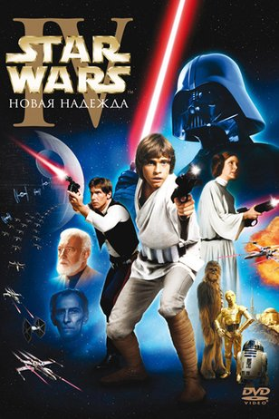

OSCAR
Жанр: Приключения с 1961г. по 1990г.

Название фильма
Год
Колличество оскаров
Спартак
1961г
4
Лоуренс Аравийский
1963г
7
Том Джонс
1964г
4
Война на Диком Западе
1964г
4
Грек Зорба
1965г
3
Камелот
1968г
3
Бонни и Клайд
1968г
2
Французский связной
1972г
5
Крестный отец
1973г
3
Приключения «Посейдона»
1973г
1
Крестный отец 2
1975г
6
Звездные войны: Эпизод 4 — Новая надежда
1978г
4
Звездные войны: Эпизод 5 — Империя наносит ответный удар
1981г
4
Индиана Джонс: В поисках утраченного ковчега
1982г
5
Парни что надо
1984г
4
Поездка в Индию
1985г
2
Из Африки
1986г
4
Чужие
1987г
2
Робокоп
1988г
1
Кто подставил кролика Роджера
1989г
4
Рожденный четвертого июля
1990г
2
Назад
Ильин Андрей Юрьевич ИКБО-20-19